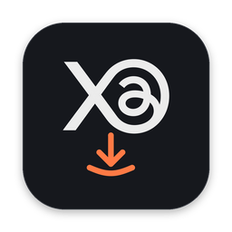

ClipSaver
贴个链接，把 X 和 Threads 的视频存下来。Paste a link, save the videos from X and Threads.
一条帖子里有好几个视频、视频其实在被引用的帖子里，它都能分清楚。Several videos in one post, or the video is really in a quoted post — it sorts that out for you.

Mac：Apple 芯片（M1–M4）· 约 12 MB | Windows：10 / 11，64 位 · 约 12 MB
都不用安装别的东西 · Mac: Apple silicon (M1–M4) · about 12 MB | Windows 10 / 11, 64-bit · about 12 MB
Nothing else to install · GitHub 仓库GitHub